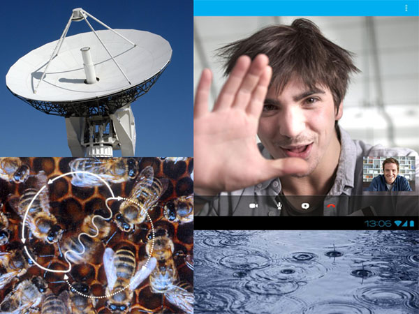
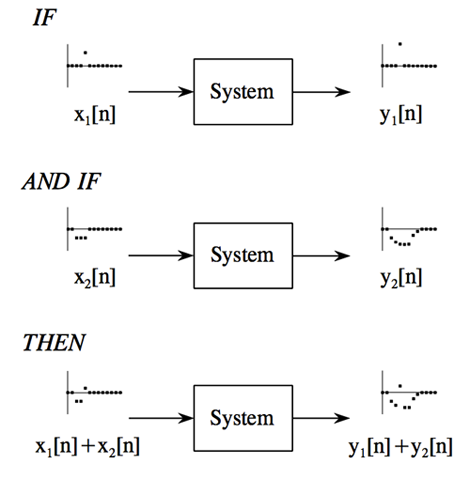
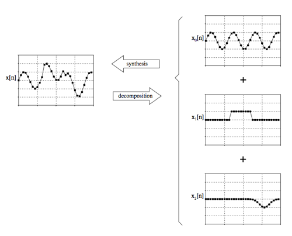
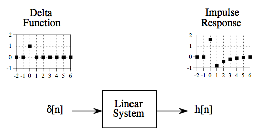
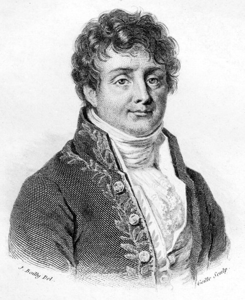
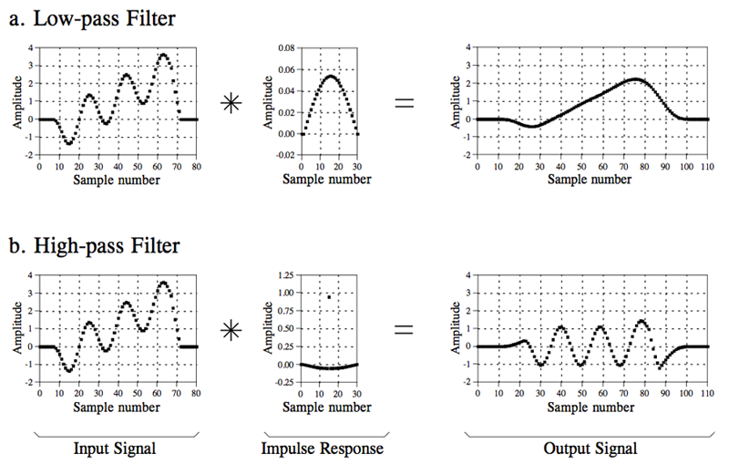
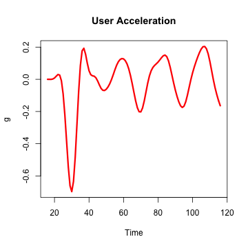

- What is DSP and where it can be applied?
- Linear systems
- Fourier analysis
- Filter design in R
DSP for Data Analysis
Brief introduction into digital signal processing
Mykola Pavlov
Founder at Biomech
Topics
What is Signal?
Anything that carries information is a signal

What is DSP and where it can be applied?
The mathematics, the algorithms, and the techniques used to manipulate signals after they have been converted into a digital form.

Contineous and discrete
- Contineous f(t)
- Discrete (digital) f[t]

Linear system

Examples: Wave propagation, resistors, capacitors, inductors, amplifiers, filters, mechanical interaction of masses, springs, echoes, resonances, image blurring...
Linear system properties: Homogenity
Amplitude change in the input results in an identical amplitude change in the output.

Linear system properties: Additivity
Signals added at the input produce signals that are added at the output.

Linear system properties: Shift invariance
Shift in the input signal causes an identical shift in the output signal.

Superposition strategy: divide-and-conquer

Synthesis: 5 + 10 = 15
Decomposition: 15 = 3 + 12 or 1 + 5 + 9 or ...
Superposition strategy: divide-and-conquer

Superposition strategy: divide-and-conquer
Divide-and-conquer: 1027 * 4 = 1000 * 4 + 20 * 4 + 7 * 4
Intuition: No more complex signals! All we need to know is how simple signals are modified by a system.
Two decompositions: Impulse and Fourier
Impulse decomposition

Delta function and Impulse Response

Same as filter kernel, convolution kernel, kernel, point spread function (image processing).
Let's summarize
- Input signal can be decomposed into a set of impulses
- Each impulse can be viewed as a scaled and shifted delta function
- Output signal can be found by adding these scaled and shifted impulse responses (This operations is known as Convolution).
Intuition: If we know impulse response, then we can calculate the output for any possible input signal!
Fourier decomposition

Fourier decomposition

DFT, IDFT, FFT
signal <- rnorm(100)
fourier_transform <- fft(signal)
Re(fourier_transform)[1:5]
## [1] -4.874 -3.616 -9.085 5.431 -2.516
Im(fourier_transform)[1:5]
## [1] 0.0000 -0.9916 10.2477 -1.5758 -0.3789
- Re[] - Cos, Index - Freq, Value - Amplitude
- Im[] - Sin, Index - Freq, Value - Amplitude
Rectangular vs Polar

Mod(fourier_transform)[1:5]
## [1] 4.874 3.749 13.695 5.655 2.545
Furier analysis

Intuition: How much information/signal is presented on a given frequency
Filter design

Filter types

Filter types

Window Sinc Filter
library(signal)
t <- as.vector(as.matrix(read.csv("data/data.csv", row.names = NULL, header = F))) # 20 Hz
plot.ts(t, ylab = "g", main = "User Acceleration")

Window Sinc Filter
filt <- fir1(15, 0.15, type = "low") # 3 Hz low-pass filter
z <- filter(filt, t) # apply filter
plot(z, col = "red", lwd = 3, type = "l", ylab = "g", main = "User Acceleration")

Credits
- Steven W. Smith, The Scientist and Engineer's Guide to Digital Signal Processing
- Fourier decomposition from Wikimedia Commons
- ChemCam image from NASA
{kind=link}
Questions?
Nikolay Pavlov, Founder at Biomech
- E-mail: me@nikolaypavlov.com
- Linkedin: http://linkedin.com/in/nikolaypavlov
- Facebook: http://www.facebook.com/pav.nikolay
- Twitter: @nikolaypavlov
- Github: https://github.com/nikolaypavlov